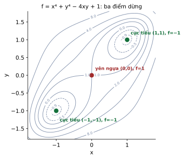
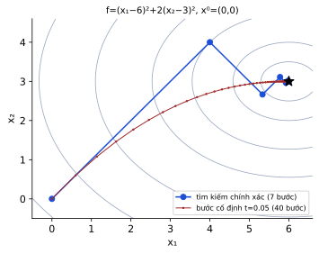
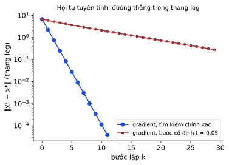
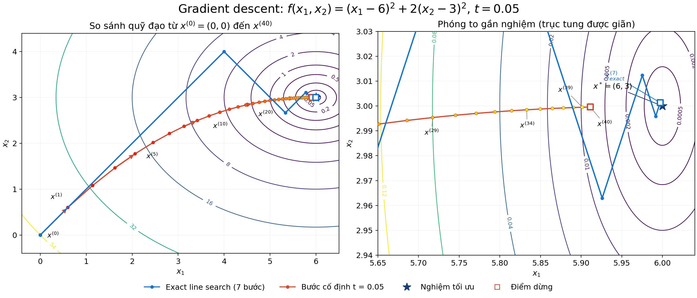
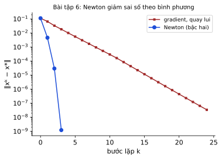

Tối ưu không ràng buộc: điều kiện cực trị và phương pháp số
Phần 1 của quy hoạch phi tuyến: bài toán không ràng buộc. Ta học (i) khi nào bài toán có nghiệm, (ii) điều kiện cần và đủ bậc một và bậc hai để một điểm là cực trị, rồi (iii) các thuật toán lặp để tìm nghiệm: gradient (bước cố định, chính xác, quay lui), Newton, tựa Newton (DFP) và gradient liên hợp; kèm khái niệm tốc độ hội tụ. Mọi bảng số trong module do chương trình tính, đối chiếu với đáp án của slide.
Nguồn: Slide 7 “Quy hoạch phi tuyến (Phần 1)” (81 trang PDF, phần 4 có ràng buộc chỉ là tiêu đề)Nocedal–Wright Ch.2–6; Boyd & Vandenberghe Ch.9; Bazaraa Ch.8Thời lượng gợi ý: 8–10 giờ
Mục tiêu học tập
Phát biểu và chứng minh (ý tưởng) các điều kiện cực trị: Fermat, cần/đủ cấp 1 và cấp 2; phân loại điểm dừng bằng Hessian (kể cả quy tắc hai biến).
Giải đủ 10 hàm của Bài tập 1: tìm điểm dừng, tính Hessian, kết luận cực tiểu / cực đại / yên ngựa.
Cài và chạy tay phương pháp gradient (bước cố định, tìm kiếm chính xác, quay lui Armijo), lập bảng lặp.
Chạy tay Newton, DFP (tựa Newton) và gradient liên hợp Fletcher–Reeves; biết vì sao hàm toàn phương n biến kết thúc sau ≤ n bước.
So sánh các phương pháp: chi phí mỗi bước, tốc độ hội tụ (tuyến tính, trên tuyến tính, bậc hai) và khi nào dùng cái nào.
Công thức cốt lõi
Tám công thức phải thuộc
Cần cấp 1: \(\nabla f(x^*)=0\); đủ nếu \(f\) lồi.
Cần cấp 2: \(\nabla^2f(x^*)\succeq0\); đủ cấp 2: \(\nabla^2f(x^*)\succ0\).
Hai biến: \(D=f_{xx}f_{yy}-f_{xy}^2\): \(D\gt 0,f_{xx}\gt 0\) min; \(D\gt 0,f_{xx}\lt 0\) max; \(D\lt 0\) yên ngựa.
Hướng giảm: \(\langle\nabla f(x),d\rangle\lt 0\).
Gradient chính xác (toàn phương): \(t_k=\dfrac{\lVert g_k\rVert^2}{g_k^\top Ag_k}\).
CG-FR: \(\beta_k=\tfrac{\lVert g_{k+1}\rVert^2}{\lVert g_k\rVert^2}\), \(d_{k+1}=-g_{k+1}+\beta_kd_k\); ≤ n bước (toàn phương).
Sơ đồ

Ba điểm dừng của x⁴+y⁴−4xy+1

Quỹ đạo gradient: chính xác và bước cố định

Hội tụ tuyến tính (đường thẳng trong thang log)
10 khái niệm, mệnh đề và phép toán của module. Mỗi thẻ có lời nói nôm na luôn hiện sẵn; bấm “Chi tiết” để xem định nghĩa chính xác, bảng, phép tính từng bước và ví dụ ở nhiều lĩnh vực (số liệu ví dụ ngoài toán đều là minh hoạ). Ví dụ có tính toán đã kiểm bằng script.
Khái niệm · local minimum
Cực trị địa phương và toàn cục, sự tồn tại nghiệm
🗣️ Nói nôm na: Đỉnh đồi nhà bạn là cực đại địa phương; Everest mới là toàn cục. Có “điểm cao nhất” chắc chắn khi bản đồ hữu hạn và liền mạch (compact + liên tục).
Ví dụ đời thường:
Đỉnh đồi nhà bạn vs Everest.
Bản đồ hữu hạn và liền mạch thì có điểm cao nhất.
Chi tiết: định nghĩa, giải thích sâu, bảng, phép tính, ví dụ
Định nghĩa / phát biểu chính xác
\(x^*\) cực tiểu địa phương: \(f(x^*)\le f(x)\) với mọi \(x\in C\) gần \(x^*\); toàn cục: với mọi \(x\in C\). Weierstrass: \(C\) compact (đóng, bị chặn), \(f\) liên tục ⇒ có cực tiểu và cực đại.
🔍 Bấm để xem giải thích sâu hơn về phát biểu này
Tồn tại là điều kiện đủ: \(\min x^2\) trên \(\mathbb R\) vẫn có nghiệm dù \(\mathbb R\) không compact; \(\min e^x\) thì không.
Vì sao đúng (ý tưởng chứng minh)
Weierstrass: dãy cực đại hoá có dãy con hội tụ (compact), \(f\) liên tục nên giá trị giới hạn đạt được.
Bảng / công thức tóm tắt
Hàm
Cực tiểu toàn cục?
\(x^4-2x^2+1\)
có, \(x=\pm1\)
\(e^x\)
không (inf=0 không đạt)
\(\sin x+\tfrac x{10}\)
không, vô số địa phương
Phép tính từng bước
\(f=x^4-2x^2+1=(x^2-1)^2\ge0\), bằng 0 tại \(\pm1\): cực tiểu toàn cục; \(x=0\): \(f=1\) là cực đại địa phương.
Ví dụ ở nhiều lĩnh vực
Lĩnh vực
Ví dụ
Địa lý (minh hoạ)
Đỉnh Fansipan vs Everest.
Kinh doanh (minh hoạ)
Lợi nhuận tốt nhất trong tháng vs tốt nhất cả đời.
Hay nhầm
Định lý tồn tại chỉ là điều kiện đủ.
Miền không đóng/không bị chặn có thể làm mất nghiệm.
Mệnh đề · first order necessary condition
Điều kiện tối ưu cấp 1 (Fermat, ∇f = 0)
🗣️ Nói nôm na: Ở đỉnh hoặc đáy thung lũng, mặt đất “phẳng” (dốc bằng 0). Nhưng mặt phẳng cũng có thể là yên ngựa.
Ví dụ đời thường:
Ở đáy thung lũng mặt đất phẳng.
Phẳng cũng có thể là yên ngựa.
Chi tiết: định nghĩa, giải thích sâu, bảng, phép tính, ví dụ
Định nghĩa / phát biểu chính xác
Cần: \(x^*\) cực trị địa phương, \(f\) khả vi ⇒ \(\nabla f(x^*)=0\). Đủ (hàm lồi): \(\nabla f(x^*)=0\) ⇒ cực tiểu toàn cục.
🔍 Bấm để xem giải thích sâu hơn về phát biểu này
∇f=0 là điều kiện cần; với hàm lồi nó đủ cho cực tiểu toàn cục.
Vì sao đúng (ý tưởng chứng minh)
Lồi: \(f(y)\ge f(x^*)+\nabla f(x^*)^\top(y-x^*)=f(x^*)\). Fermat: nếu \(f^\prime\gt 0\) dịch trái làm \(f\) giảm.
Bảng / công thức tóm tắt
Hàm
Điểm dừng
Kết luận
\(x^2\)
0
cực tiểu toàn cục (lồi)
\(x^3\)
0
không cực trị
Phép tính từng bước
\(f=x_1^2+x_2^2\): \(\nabla f=(2x_1,2x_2)=0\Rightarrow(0,0)\); lồi ⇒ cực tiểu toàn cục \(f^*=0\).
Ví dụ ở nhiều lĩnh vực
Lĩnh vực
Ví dụ
Đi bộ (minh hoạ)
Ở đáy thung lũng bạn không thấy dốc nữa.
Hay nhầm
Điều kiện cần, không đủ (x³).
Chỉ đủ khi lồi.
Mệnh đề · second order condition
Điều kiện cấp 2 và phân loại điểm dừng
🗣️ Nói nôm na: Sau khi thấy mặt phẳng (∇f=0), hỏi “mặt cong lên, xuống hay lên ở hướng này xuống ở hướng kia?” — Hessian trả lời.
Ví dụ đời thường:
Mặt cong lên, xuống, hay lên theo một hướng xuống theo hướng kia.
Đèo núi là yên ngựa.
Chi tiết: định nghĩa, giải thích sâu, bảng, phép tính, ví dụ
Định nghĩa / phát biểu chính xác
Cần: \(\nabla^2f(x^*)\succeq0\). Đủ: \(\nabla^2f(x^*)\succ0\) ⇒ cực tiểu địa phương; \(\prec0\) ⇒ cực đại; bất định ⇒ yên ngựa. Hai biến: \(D=f_{xx}f_{yy}-f_{xy}^2\).
🔍 Bấm để xem giải thích sâu hơn về phát biểu này
Xấp xỉ Taylor bậc hai \(\tfrac12d^\top Hd\) quyết định loại điểm dừng.
Vì sao đúng (ý tưởng chứng minh)
Taylor bậc hai: \(f(x^*+d)-f(x^*)\approx\tfrac12d^\top Hd\); dấu của dạng toàn phương này theo mọi hướng quyết định loại điểm.
Bảng / công thức tóm tắt
D
\(f_{xx}\)
Loại
>0
>0
cực tiểu
>0
<0
cực đại
<0
yên ngựa
=0
chưa kết luận
Phép tính từng bước
\(f=x^4+y^4-4xy+1\): \((0,0)\) có \(D=-16\) yên ngựa; \((1,1)\) có \(D=128,f_{xx}=12\) cực tiểu.
Ví dụ ở nhiều lĩnh vực
Lĩnh vực
Ví dụ
Địa hình (minh hoạ)
Đèo núi là yên ngựa: lên theo một hướng, xuống theo hướng kia.
Hay nhầm
“Cần” dùng ⪰, “đủ” dùng ≻.
Quy tắc \(D\) chỉ cho hai biến.
Khái niệm · descent direction
Hướng giảm
🗣️ Nói nôm na: Hướng đi xuống dốc: tạo góc nhọn với hướng ngược gradient.
Ví dụ đời thường:
Hướng xuôi dốc.
Mọi hướng tạo góc nhọn với −∇f.
Chi tiết: định nghĩa, giải thích sâu, bảng, phép tính, ví dụ
Định nghĩa / phát biểu chính xác
\(d\) là hướng giảm tại \(x^0\) nếu \(f(x^0+td)\lt f(x^0)\) với \(t\gt 0\) nhỏ. Đủ: \(\langle\nabla f(x^0),d\rangle\lt 0\).
🔍 Bấm để xem giải thích sâu hơn về phát biểu này
Đủ: ⟨∇f,d⟩<0.
Vì sao đúng (ý tưởng chứng minh)
\(f(x+td)=f(x)+t\langle\nabla f,d\rangle+o(t)\), dấu quyết định bởi tích vô hướng.
Bảng / công thức tóm tắt
d
\(\langle\nabla f,d\rangle\) với \(\nabla f=(4,2)\)
Giảm?
(−2,−2)
−12
có
(1,−1)
2
không
(2,0)
8
không
Phép tính từng bước
\(f=2x^2+y^2-2\) tại \((1,1)\), \(\nabla f=(4,2)\): \(d=(-2,-2)\) giảm.
Ví dụ ở nhiều lĩnh vực
Lĩnh vực
Ví dụ
Trượt tuyết (minh hoạ)
Mọi hướng thiên về “xuôi dốc” đều ổn.
Hay nhầm
Không cần \(d=-\nabla f\).
Khái niệm · rate of convergence
Tốc độ hội tụ: tuyến tính, trên tuyến tính, bậc hai
🗣️ Nói nôm na: Tuyến tính: mỗi bước thêm một lượng chữ số đúng cố định; bậc hai: số chữ số đúng gấp đôi mỗi bước.
Ví dụ đời thường:
Mỗi bước thêm một chữ số đúng vs gấp đôi.
Tiền gửi tăng đều vs tăng theo bình phương.
Chi tiết: định nghĩa, giải thích sâu, bảng, phép tính, ví dụ
Hessian không xác định dương thì d có thể không là hướng giảm.
Thuật toán · quasi-Newton method
Tựa Newton (DFP, BFGS)
🗣️ Nói nôm na: Không có bản đồ độ cong nhưng mỗi bước đều học thêm từ chênh lệch gradient.
Ví dụ đời thường:
Học dần độ cong từ chênh lệch gradient.
Không cần bản đồ độ cong.
Chi tiết: định nghĩa, giải thích sâu, bảng, phép tính, ví dụ
Định nghĩa / phát biểu chính xác
\(H_{k+1}=H_k+\tfrac{vv^\top}{\langle u,v\rangle}-\tfrac{H_kuu^\top H_k}{\langle u,H_ku\rangle}\) (DFP), \(v=t_kd_k\), \(u=g_{k+1}-g_k\); \(d_k=-H_kg_k\). Trên tuyến tính; hàm toàn phương ≤ n bước.
🔍 Bấm để xem giải thích sâu hơn về phát biểu này
Điều kiện tựa Newton \(H_{k+1}u=v\).
Vì sao đúng (ý tưởng chứng minh)
Điều kiện tựa Newton \(H_{k+1}u=v\) (xấp xỉ \(H^{-1}\) thoả tương tự \(\nabla^2f\,v\approx u\)).
Phím ← → hoặc nút để chuyển slide; “Toàn màn hình” để trình chiếu. Mỗi slide có khung “📖 Giải thích cho người mới” và ảnh trang slide gốc.
MODULE 7 · MỞ ĐẦU
Bản đồ Module 7
Slide chia thành bốn phần; phần 4 (có ràng buộc) chỉ nêu tiêu đề và đã được học ở Module 2, 3, 6.
Phần
Trang slide
Nội dung
Câu hỏi trung tâm
1
3–8
Bài toán QHPT, cực trị địa phương/toàn cục
Thế nào là nghiệm tối ưu?
2
9
Sự tồn tại nghiệm
Khi nào chắc chắn có nghiệm?
3.1
10–21
Điều kiện tối ưu không ràng buộc
Nhận ra cực trị bằng gradient và Hessian
3.2
22–68
Các phương pháp số
Tìm nghiệm bằng thuật toán lặp nào?
Một công thức chung
Mọi thuật toán của module đều có dạng \(x^{k+1}=x^k+t_kd^k\): chỉ khác nhau ở hướng \(d^k\) và bước \(t_k\).
MODULE 7 · PHẦN 1/3
01
Bài toán, cực trị, sự tồn tại nghiệm
Hai ví dụ mở đầu và bài toán tổng quát
Cực trị địa phương, toàn cục; Bài tập 1
Bolzano–Weierstrass, tập compact
MODULE 7 · PHẦN 1
Hai ví dụ mở đầu
1
Ví dụ 1: rào đất
100 m dây rào khu đất chữ nhật: \(\max xy\) s.t. \(x+y\le50,\ x,y\ge0\) (hàm phi tuyến, miền lồi đa diện). Dùng \(xy\le\left(\tfrac{x+y}2\right)^2\le625\) ⇒ \(x=y=25\), diện tích 625 \(\mathrm{m^2}\).
2
Ví dụ 2: phân phối hai sản phẩm
\(\min\ln(1+x)+\ln(1+y)\) s.t. \(x^2+y^2\le9,\ x,y\ge0\) (miền là một phần tư hình tròn, không phải đa diện). Hàm tăng theo cả hai biến nên cực tiểu tại \((0,0)\) (giá trị 0); cực đại (nếu bài là max) tại \(x=y=\tfrac3{\sqrt2}\approx2.1213\), giá trị \(2\ln(1+2.1213)=2.2793\).
cực đại và cực tiểu gọi chung; \(f(x^*)\) là giá trị cực trị
MODULE 7 · PHẦN 1
Ví dụ 3 và Bài tập 1 (tr.8): hàm có/không có cực trị
Hàm
Cực trị
\(f=x^4-2x^2+1\) trên \(\mathbb R\)
cực tiểu toàn cục \(x=\pm1\) (\(f=0\)); \(x=0\) cực đại địa phương
\(f=\sin x+\tfrac x{10}\) trên \(\mathbb R\)
vô số cực tiểu/cực đại địa phương, không có toàn cục (f → ±∞)
Đáp án Bài tập 1 (nêu ví dụ cho từng tính chất)
Tính chất
Ví dụ
a) vô số cực trị toàn cục
\(\sin x\): \(\max=1\) tại \(\tfrac\pi2+2k\pi\)
b) không có cực trị toàn cục
\(f=x\) (hoặc \(x^3\)) trên \(\mathbb R\)
c) có cực đại toàn cục, không có cực tiểu toàn cục
\(f=-x^2\): max \(=0\), không bị chặn dưới
d) có điểm dừng nhưng không cực trị nào
\(f=x^3\): \(f^\prime(0)=0\), đổi dấu
e) có cực trị địa phương nhưng không toàn cục
\(f=x^3-3x\): cực đại địa phương \(x=-1\), cực tiểu địa phương \(x=1\), không bị chặn
MODULE 7 · PHẦN 2
Sự tồn tại nghiệm
Định lý 1 (Bolzano–Weierstrass)
\(f\) liên tục trên \([a,b]\) thì đạt giá trị lớn nhất và nhỏ nhất trên đó.
Định lý 2 (tổng quát)
\(C\) compact khác rỗng và \(f\) liên tục trên \(C\) ⇒ bài toán (P) có nghiệm. (Compact \(\Leftrightarrow\) đóng và bị chặn trong \(\mathbb R^n\).)
Bài
Có nghiệm?
Lý do
\(\min e^x\) trên \(\mathbb R\)
không
inf = 0 không đạt, miền không bị chặn
\(\min x\) trên \((0,1]\)
không
miền không đóng
\(\min x^2\) trên \([-1,3]\)
có (x=0)
compact, f liên tục
MODULE 7 · PHẦN 2/3
02
Điều kiện tối ưu không ràng buộc
Fermat, điều kiện cần/đủ cấp 1
Điều kiện cần/đủ cấp 2, quy tắc hai biến
Ví dụ và Bài tập 1
MODULE 7 · PHẦN 2
Quy tắc Fermat và điều kiện cấp 1
Định lý 1 (Fermat, một biến)
\(f\) đạt cực trị địa phương tại \(x^*\) và khả vi tại đó ⇒ \(f^\prime(x^*)=0\).
Định lý 2 (cần cấp 1)
\(x^*\) là nghiệm địa phương của (P1), \(f\) khả vi tại \(x^*\) ⇒ \(\nabla f(x^*)=0\).
Định lý 3 (đủ cấp 1)
\(f\) lồi trên \(\mathbb R^n\), khả vi tại \(x^*\), \(\nabla f(x^*)=0\) ⇒ \(x^*\) là cực tiểu toàn cục.
Chú ý: điều kiện cần, không đủ: \(g(x)=x^3\) có \(g^\prime(0)=0\) nhưng không đạt cực trị. Điểm \(\nabla f=0\) gọi là điểm dừng.
MODULE 7 · PHẦN 2
Ví dụ 5: \(f=x_1^2+x_2^2\)
1
a) Điểm dừng
\(\nabla f=(2x_1,2x_2)=0\Rightarrow x=(0,0)\).
2
b) f lồi
\(\nabla^2f=\begin{pmatrix}2&0\\0&2\end{pmatrix}\succ0\) (hoặc \(f=\lVert x\rVert^2\) là chuẩn bình phương, lồi).
3
c) Cực tiểu toàn cục
Lồi + điểm dừng \(\Rightarrow\) \((0,0)\) là cực tiểu toàn cục không ràng buộc, \(f^*=0\) (cũng thấy ngay vì \(f\ge0\)).
MODULE 7 · PHẦN 2
Điều kiện cấp 2
Định lý 4 (cần cấp 2)
\(x^*\) nghiệm địa phương, \(f\) khả vi cấp hai tại \(x^*\) ⇒ \(\nabla f(x^*)=0\) và \(\nabla^2f(x^*)\succeq0\) (nửa xác định dương).
Định lý 5 (đủ cấp 2)
\(\nabla f(x^*)=0\) và \(\nabla^2f(x^*)\succ0\) ⇒ \(x^*\) là cực tiểu địa phương. Nếu \(\nabla^2f(x^*)\prec0\) thì là cực đại địa phương.
\(\nabla^2f(x^*)\)
Kết luận
\(\succ0\)
cực tiểu địa phương
\(\prec0\)
cực đại địa phương
bất định (có λ > 0 và λ < 0)
điểm yên ngựa
\(\succeq0\) hoặc \(\preceq0\) suy biến
chưa kết luận (cần xét thêm)
MODULE 7 · PHẦN 2
Quy tắc hai biến
\(\nabla f(x^*)=0\), \(H=\nabla^2f(x^*)=\begin{pmatrix}f_{xx}&f_{xy}\\f_{xy}&f_{yy}\end{pmatrix}\). Gọi \(D=\det H=f_{xx}f_{yy}-f_{xy}^2\).
Điều kiện
Kết luận
\(D\gt 0,\ f_{xx}\gt 0\)
cực tiểu địa phương
\(D\gt 0,\ f_{xx}\lt 0\)
cực đại địa phương
\(D\lt 0\)
không cực trị (yên ngựa)
\(D=0\)
chưa kết luận
Vì sao
\(D=\lambda_1\lambda_2\): \(D\gt 0\) hai giá trị riêng cùng dấu, dấu đó trùng dấu của \(f_{xx}\) (vết/phần tử đường chéo). \(D\lt 0\) hai giá trị riêng trái dấu = yên ngựa.
MODULE 7 · PHẦN 2
Ví dụ 1: \(f=x^4+y^4-4xy+1\)
1
Điểm dừng
\(f_x=4x^3-4y=0,\ f_y=4y^3-4x=0\Rightarrow y=x^3,\ x=y^3=x^9\Rightarrow x(x^8-1)=0\Rightarrow x=0,\pm1\). Điểm dừng: \((0,0),(1,1),(-1,-1)\).
Bậc hai ⇒ trên tuyến tính ⇒ tuyến tính; chiều ngược lại không đúng.
Ví dụ của slide (tr.29)
Slide xét \(\lVert x^{k+1}-x^*\rVert\le\gamma\lVert x^k-x^*\rVert^{3/2}\) và kết luận “tuyến tính nhưng không bậc hai”. Chính xác hơn: số mũ \(\tfrac32\) cho \(c_k=\gamma\lVert x^k-x^*\rVert^{1/2}\to0\) nên dãy hội tụ trên tuyến tính (bậc \(\tfrac32\)), mạnh hơn tuyến tính.
Dừng tại \(k=7\): \(x^7\approx(5.9973,3.0014)\), \(\lVert\nabla f\rVert\approx0.0078\lt 10^{-2}\). Điểm thú vị: \(t_k\) luôn bằng \(\tfrac13\) vì gradient lần lượt có dạng \(c(1,1)\) và \(c(-1,1)\), với cả hai ta có \(\tfrac{\lVert g\rVert^2}{g^\top Ag}=\tfrac{2c^2}{6c^2}=\tfrac13\).
MODULE 7 · PHẦN 3
Bước cố định và bước chính xác: so sánh (hình bạn gửi)
Cùng \(f=(x_1-6)^2+2(x_2-3)^2\), cùng \(x^0=(0,0)\):
Chính xác: 7 bước (ε=0.01), zigzag, nhảy xa lúc đầu.
Cố định \(t=0.05\): cong mượt nhưng chậm, 68 bước (hình dừng ở \(x^{40}\approx(5.911,3.000)\)).
Phân kỳ khi \(t\ge\tfrac2{\lambda_{\max}(A)}=0.5\).

Hình do bạn gửi (đã kiểm: 7 bước chính xác; x⁽⁴⁰⁾=(5.911, 3.000) với t=0.05).
Dạng toàn phương \(\tfrac12x^\top Ax+b^\top x+c\): với 2a ta lấy \(A=\begin{pmatrix}20&-4\\-4&4\end{pmatrix}\), \(b=(-2,-2)\); với 2b: \(A=\begin{pmatrix}4&-2\\-2&2\end{pmatrix}\), \(b=(2,-2)\). Mã Python đối chiếu ở tab Code (bài “gdexact”).
\(t_k:=1\); lặp: tính \(x^{k+1}=x^k-t_k\nabla f(x^k)\); nếu \(f(x^{k+1})-f(x^k)\le-\tau t_k\lVert\nabla f\rVert^2\) thì sang bước 4, ngược lại \(t_k:=\alpha t_k\).
Tính gradient mới, \(k\leftarrow k+1\), về bước 2.
Định lý hội tụ
\(f\) bị chặn dưới, \(\nabla f\) Lipschitz (\(\lVert\nabla f(x)-\nabla f(y)\rVert\le L\lVert x-y\rVert\)), \(t_k\) chọn theo Armijo ⇒ với mọi \(x^0\): \(\nabla f(x^k)\to0\). (Hội tụ về điểm dừng, không đảm bảo là cực tiểu toàn cục nếu \(f\) không lồi.)
MODULE 7 · PHẦN 3
Bài tập 4: gradient với quay lui, \(\tau=0.01,\ \alpha=0.5,\ \varepsilon=10^{-3}\)
Bước \(t_k=1\) (cố định). Nếu \(t_k\) chọn bằng tìm kiếm chính xác hoặc quay lui: Newton suy rộng.
Điều kiện dừng như phương pháp gradient.
Trên thực tế giải hệ \(\nabla^2f\,d=-\nabla f\), không tính nghịch đảo.
MODULE 7 · PHẦN 3
Hội tụ bậc hai của Newton
Định lý
\(f\) hai lần khả vi liên tục, \(\nabla^2f\) Lipschitz gần cực tiểu địa phương \(x^*\) với \(\nabla^2f(x^*)\succ0\), \(x^0\) đủ gần \(x^*\) ⇒ \(x^k\to x^*\) với tốc độ bậc hai: \(\lVert x^{k+1}-x^*\rVert\le\dfrac Lm\lVert x^k-x^*\rVert^2\) (\(L\): hằng Lipschitz, \(m=\lambda_{\min}(\nabla^2f(x^*))\)).

Newton giảm sai số theo bình phương; gradient quay lui chỉ giảm tuyến tính
Chú ý về hằng số
Với \(\lVert\nabla^2f(x)-\nabla^2f(y)\rVert\le L\lVert x-y\rVert\) hằng số thường gặp là \(\tfrac L{2m}\); slide ghi \(\tfrac Lm\) (an toàn hơn, vẫn đúng). Điều quan trọng là bình phương sai số.
Khớp bảng đáp án của slide (tr.44): \(x^{(3)}=(0.6959107807,-1.347955390)\), \(x^{(4)}=(0.6958843872,-1.347942194)\), \(f^*=-0.5824451744\).
MODULE 7 · PHẦN 3
Phương pháp tựa Newton (DFP / BFGS)
Newton phải tính và giải với \(\nabla^2f\) ở mỗi bước. Tựa Newton thay \([\nabla^2f(x^k)]^{-1}\) bằng một ma trận đối xứng xác định dương \(H_k\) cập nhật nhờ hiệu gradient: bước lặp nhiều hơn nhưng mỗi bước rẻ; tốc độ trên tuyến tính.
Slide viết “(cập nhật BFGS)” nhưng công thức ghi và ví dụ dùng chính là cập nhật DFP (Davidon–Fletcher–Powell). BFGS là công thức khác (cập nhật dạng \((I-\rho vu^\top)H(I-\rho uv^\top)+\rho vv^\top\), \(\rho=1/u^\top v\)); cả hai thuộc họ tựa Newton.
MODULE 7 · PHẦN 3
Ví dụ 3: tựa Newton cho \(f=(x_1-6)^2+2(x_2-3)^2\)
Hai bước cho đúng nghiệm \(x^*=(6,3)\), \(f^*=0\) (hàm toàn phương 2 biến: DFP với tìm kiếm chính xác kết thúc sau \(\le n\) bước). Đã kiểm bằng chương trình.
MODULE 7 · PHẦN 3
Bài tập 7: tựa Newton
Hàm
Điểm đầu
Kết quả
a
\((x_1+2)^2+5(x_2-4)^4\)
(0,0)
nghiệm \((-2,4)\), \(f^*=0\) (hàm không toàn phương: cần nhiều hơn 2 bước)
Câu a: hàm không toàn phương nên \(t_k\) phải tìm số (tìm kiếm chính xác theo tia hoặc quay lui); \(f\ge0\) và \(f=0\) chỉ tại \((-2,4)\) nên biết ngay nghiệm để kiểm.
MODULE 7 · PHẦN 3
Gradient liên hợp: hướng \(Q\)-liên hợp
Là phương pháp trung gian giữa gradient và Newton: chỉ dùng đạo hàm bậc một nhưng khắc phục được độ chậm của gradient. Xét \(f(x)=\tfrac12x^\top Qx+c^\top x\), \(Q\succ0\).
Định nghĩa
\(d_1,\dots,d_m\ne0\) là các hướng \(Q\)-liên hợp nếu \(d_i^\top Qd_j=0\) với mọi \(i\ne j\).
Kết quả thực nghiệm cho \(f=(x_1-6)^2+2(x_2-3)^2\), \(x^0=(0,0)\): gradient chính xác 7 bước (ε=10⁻²); Newton 1 bước; DFP 2 bước; CG 2 bước. Chi tiết ở Bài lớn 7.8.
MODULE 7 · TỔNG KẾT
Tổng kết Module 7
Chủ đề
Điều cần nhớ
Tồn tại
compact + f liên tục ⇒ có nghiệm (điều kiện đủ)
Điều kiện cấp 1
cực trị ⇒ \(\nabla f=0\); lồi + \(\nabla f=0\) ⇒ cực tiểu toàn cục
Điều kiện cấp 2
cần: \(\nabla^2f\succeq0\); đủ: \(\nabla^2f\succ0\); bất định = yên ngựa
Hướng giảm
\(\langle\nabla f,d\rangle\lt 0\)
Gradient
bước cố định / chính xác \(\tfrac{\lVert g\rVert^2}{g^\top Ag}\) / quay lui Armijo; tuyến tính
Newton
\(x-H^{-1}g\); bậc hai; 1 bước với toàn phương
DFP
\(H_{k+1}\) từ \(v,u\); ≤ n bước với toàn phương
CG
\(d_{k+1}=-g_{k+1}+\beta_kd_k\); ≤ n bước với toàn phương
Ba điểm cần đọc kỹ khi dùng slide
Tr.29: ví dụ \(\lVert x^{k+1}-x^*\rVert\le\gamma\lVert x^k-x^*\rVert^{3/2}\) thực ra là hội tụ trên tuyến tính.
Ví dụ A — Phân loại điểm dừng của \(f=x^3-3xy+y^3\)
\(\nabla f=(3x^2-3y,\ 3y^2-3x)=0\Rightarrow y=x^2,\ x=y^2=x^4\Rightarrow x=0\) hoặc \(x=1\): điểm \((0,0),(1,1)\). \(H=\begin{pmatrix}6x&-3\\-3&6y\end{pmatrix}\). Tại \((0,0)\): \(D=-9\lt 0\) ⇒ yên ngựa. Tại \((1,1)\): \(D=36-9=27\gt 0\), \(f_{xx}=6\gt 0\) ⇒ cực tiểu địa phương, \(f=-1\). Không toàn cục vì \(f\to-\infty\) khi \(x\to-\infty,y=0\).
Ví dụ B — Một bước gradient chính xác
\(f=x_1^2+3x_2^2\), \(x^0=(3,1)\): \(A=\mathrm{diag}(2,6)\), \(g=(6,6)\). \(t=\tfrac{72}{(6,6)A(6,6)^\top}=\tfrac{72}{72+216}=\tfrac14\). \(x^1=(3,1)-\tfrac14(6,6)=(1.5,-0.5)\), \(f(x^1)=2.25+0.75=3\) giảm từ \(f(x^0)=12\).
Cho rằng \(f^\prime(x^*)=0\) đủ để có cực trị (\(x^3\)).
Nhầm “nửa xác định dương” (cần) với “xác định dương” (đủ).
Dùng “quy tắc hai biến” cho hàm ba biến.
Lấy sai ma trận \(A\) của dạng toàn phương (quên nhân đôi hệ số \(x_i^2\)).
Hội tụ của gradient chỉ nói \(\nabla f\to0\), không phải toàn cục khi \(f\) không lồi.
Newton xuất phát xa nghiệm có thể phân kỳ hoặc đi về cực đại/yên ngựa.
Coi mọi thuật toán toàn phương đều “1 bước” — chỉ Newton; DFP/CG cần \(\le n\) bước.
Bối cảnh
📜 Bối cảnh
Fermat (1630s) nêu điều kiện \(f^\prime=0\); Newton (1669) và Raphson tìm nghiệm bằng lặp; Cauchy (1847) đề xuất phương pháp hướng dốc nhất; Davidon (1959) tìm ra tựa Newton, Fletcher–Powell (1963) hoàn thiện (DFP), BFGS (1970); Hestenes–Stiefel (1952) và Fletcher–Reeves (1964) cho gradient liên hợp.
Boyd & Vandenberghe, Ch.9 (tối ưu không ràng buộc).
Slide gốc: Slides/4. TUH_Khong rang buoc 260608.pdf (bản sao: Slides/7_TUH_Khong_rang_buoc_260608.pdf).
Mỗi bài dưới đây giải trọn vẹn từng bước như một bài tự luận dài (đề → phân tích → từng bước có “vì sao” → bảng đầy đủ → kiểm bằng code → biến thể → bài tự làm).
Cách đọc các bài lớn
Mỗi bài viết đủ bước và đối chiếu bằng code (numpy/sympy). Bảng lặp do chương trình sinh từ đề, không gõ tay. Hãy tự làm 20–30 phút trước khi mở lời giải.
10 hàm
Bài lớn 7.1 — Bài tập 1: tìm và phân loại điểm dừng của 10 hàm
Từng hàm có \(\nabla f\), Hessian, giá trị riêng và kết luận; điểm dừng đã kiểm \(\nabla f=0\) bằng sympy.
Đề bài và quy trình
Slide tr.21 (Bài tập 1) yêu cầu tìm các điểm cực trị của 10 hàm. Quy trình chung: (1) giải \(\nabla f=0\); (2) tính \(\nabla^2f\) tại từng điểm dừng; (3) giá trị riêng (hoặc \(D=\det H\) cho hai biến); (4) kết luận; (5) kiểm toàn cục nếu có thể (lồi/lõm, hoặc \(f\to\pm\infty\)).
Chú ý về hàm số 8
Ảnh slide cho \(f=-\tfrac12xy+\tfrac2x-\tfrac1y\) (miền \(x,y\ne0\)); OCR văn bản dễ đọc nhầm. Bài lớn này dùng đúng dạng đọc từ ảnh.
Hàm 1
\(f=- 3 x^{2} + 2 x y - 2 x - 4 y^{2} + 3 y + 1\). \(\nabla f=\left[\begin{matrix}- 6 x + 2 y - 2 & 2 x - 8 y + 3\end{matrix}\right]\); \(\nabla^2f=\left[\begin{matrix}-6 & 2\\2 & -8\end{matrix}\right]\).
Hessian hằng số và xác định (dương/âm) ⇒ hàm lồi/lõm ⇒ điểm dừng duy nhất là cực trị toàn cục.
Hàm 2
\(f=x^{2} + x y - 3 x + y^{2} - 3 y\). \(\nabla f=\left[\begin{matrix}2 x + y - 3 & x + 2 y - 3\end{matrix}\right]\); \(\nabla^2f=\left[\begin{matrix}2 & 1\\1 & 2\end{matrix}\right]\).
Hàm bậc ba/năm không bị chặn (\(f\to\pm\infty\) theo một hướng) nên các cực trị đều chỉ là địa phương.
Hàm 4
\(f=\frac{x^{3}}{3} - 3 x^{2} + x y + 13 x + \frac{y^{2}}{4} - y + 2\). \(\nabla f=\left[\begin{matrix}x^{2} - 6 x + y + 13 & x + \frac{y}{2} - 1\end{matrix}\right]\); \(\nabla^2f=\left[\begin{matrix}2 x - 6 & 1\\1 & \frac{1}{2}\end{matrix}\right]\).
Miền \(x,y\ne0\); điểm dừng duy nhất là cực tiểu địa phương (giá trị riêng đều dương); \(f\) không bị chặn dưới trên miền (cho \(x\to0^+\) với \(\tfrac2x\) cộng, nhưng \(-\tfrac1y\to-\infty\) khi \(y\to0^+\)).
Hàm 9
\(f=x^{2} - 4 x z + 2 y^{2} - 2 y + 9 z^{2} + 3 z + 4\). \(\nabla f=\left[\begin{matrix}2 x - 4 z & 4 y - 2 & - 4 x + 18 z + 3\end{matrix}\right]\); \(\nabla^2f=\left[\begin{matrix}2 & 0 & -4\\0 & 4 & 0\\-4 & 0 & 18\end{matrix}\right]\).
Hessian hằng số và xác định (dương/âm) ⇒ hàm lồi/lõm ⇒ điểm dừng duy nhất là cực trị toàn cục.
Hàm 10
\(f=x^{3} - 2 x^{2} - 2 x y + x z + y^{2} - y z + z^{2} + 3 z\). \(\nabla f=\left[\begin{matrix}3 x^{2} - 4 x - 2 y + z & - 2 x + 2 y - z & x - y + 2 z + 3\end{matrix}\right]\); \(\nabla^2f=\left[\begin{matrix}6 x - 4 & -2 & 1\\-2 & 2 & -1\\1 & -1 & 2\end{matrix}\right]\).
Hàm bậc ba/năm không bị chặn (\(f\to\pm\infty\) theo một hướng) nên các cực trị đều chỉ là địa phương.
Kiểm chứng bằng code
💻 Điểm dừng và phân loại bằng sympy
Chạy lại hai hàm đại diện (3 và 6).
import sympy as sp, numpy as np
x, y = sp.symbols("x y", real=True)
for name, f in (("3", x**3 + 2*x*y - 8*y**3), ("6", sp.Rational(1,3)*x**3 - x - sp.Rational(1,3)*y**3 + y)):
sols = sp.solve([sp.diff(f, x), sp.diff(f, y)], [x, y], dict=True)
for s in sols:
H = np.array(sp.hessian(f, (x, y)).subs(s).tolist(), dtype=float)
print(name, s, np.linalg.eigvalsh(H).round(3), "f =", f.subs(s))
Kết quả khi chạy:
3 {x: 0, y: 0} [-2. 2.] f = 0
3 {x: 1/3, y: -1/6} [1.394 8.606] f = -1/27
6 {x: -1, y: -1} [-2. 2.] f = 0
6 {x: -1, y: 1} [-2. -2.] f = 4/3
6 {x: 1, y: -1} [2. 2.] f = -4/3
6 {x: 1, y: 1} [-2. 2.] f = 0
lý thuyết có số
Bài lớn 7.2 — Điều kiện cực trị: những chỗ dễ nhầm
Suy biến Hessian, câu trắc nghiệm 1–4 của slide, và các ví dụ về tồn tại nghiệm.
Đề bài
Kiểm các khẳng định lý thuyết của slide bằng ví dụ cụ thể: (a) điều kiện đủ cấp 2 không bắt buộc, (b) Hessian suy biến cần xét thêm, (c) tồn tại nghiệm là điều kiện đủ.
(a) Hessian suy biến: bốn hàm một điểm 0
Hàm
\(f^{\prime\prime}(0)\)
Hành vi tại 0
Kết luận
\(x^2\)
2
cực tiểu
đủ cấp 2 áp dụng được
\(x^4\)
0
cực tiểu (vì \(x^4\ge0\))
Hessian ⪰0 nhưng không ≻0: cần xét bậc cao
\(-x^4\)
0
cực đại
tương tự
\(x^3\)
0
không cực trị
cũng \(f^{\prime}(0)=0,f^{\prime\prime}(0)=0\)
Kết luận: khi \(\nabla^2f(x^*)\) chỉ nửa xác định, điều kiện cấp 2 không phân biệt được \(x^4\) (cực tiểu) và \(x^3\) (không cực trị). Phải dùng đạo hàm bậc cao hơn hoặc xét dấu \(f(x)-f(x^*)\) trực tiếp.
(b) Slide câu 1 và hàm bốn biến
1
Câu 1
\(f=x_1^2+x_2^2+x_3^4+x_4^4\), \(\nabla^2f(0)=\mathrm{diag}(2,2,0,0)\succeq0\), không \(\succ0\). Dù vậy \(0\) là cực tiểu toàn cục vì \(f\ge0=f(0)\). Đáp án B.
2
Hàm không có cực tiểu
\(f=e^x\): \(f^\prime=e^x\gt 0\) mọi \(x\) nên không có điểm dừng; \(\inf=0\) không đạt. Đáp án D.
(c) Tồn tại nghiệm
Bài
Miền
Kết quả
\(\min x^2\)
\([-1,3]\) compact
có, \(x=0\) (Weierstrass)
\(\min x^2\)
\(\mathbb R\) không compact
vẫn có \(x=0\) (điều kiện chỉ đủ)
\(\min e^x\)
\(\mathbb R\)
không có (inf=0 không đạt)
\(\min x\)
\((0,1]\) không đóng
không có
\(\min\tfrac1x\)
\([1,\infty)\) không bị chặn
không có (inf=0)
thuật toán 1
Bài lớn 7.3 — Gradient với tìm kiếm chính xác: Ví dụ 2, Bài tập 2, 3 và bước cố định
Bảng lặp đầy đủ, công thức \(A\) từ dạng bậc hai, phân tích hội tụ và phân kỳ của bước cố định.
Đề bài (Ví dụ 2, Bài tập 2, 3)
Tìm cực tiểu bằng gradient + tìm kiếm chính xác theo tia: Ví dụ 2 \(f=(x_1-6)^2+2(x_2-3)^2\) (\(x^0=(0,0)\), ε=0.01); BT2a, BT2b; BT3 (ε=0.001).
Ví dụ 2: bảng 7 bước
1
Chuẩn bị
\(f=\tfrac12x^\top Ax+b^\top x+c\) với \(A=\mathrm{diag}(2,4)\), \(b=(-12,-12)\), \(c=54\). \(\nabla f=Ax+b\).
2
Lặp
k
x^k
f(x^k)
∇f(x^k)
‖∇f‖
t_k
0
\left(0.0000,\ 0.0000\right)
54.0000
\left(-12.0000,\ -12.0000\right)
16.9706
0.3333
1
\left(4.0000,\ 4.0000\right)
6.0000
\left(-4.0000,\ 4.0000\right)
5.6569
0.3333
2
\left(5.3333,\ 2.6667\right)
0.6667
\left(-1.3333,\ -1.3333\right)
1.8856
0.3333
3
\left(5.7778,\ 3.1111\right)
0.0741
\left(-0.4444,\ 0.4444\right)
0.6285
0.3333
4
\left(5.9259,\ 2.9630\right)
0.0082
\left(-0.1481,\ -0.1481\right)
0.2095
0.3333
5
\left(5.9753,\ 3.0123\right)
0.0009
\left(-0.0494,\ 0.0494\right)
0.0698
0.3333
6
\left(5.9918,\ 2.9959\right)
0.0001
\left(-0.0165,\ -0.0165\right)
0.0233
0.3333
7
\left(5.9973,\ 3.0014\right)
0.0000
\left(-0.0055,\ 0.0055\right)
0.0078
3
Nhận xét
\(t_k=\tfrac13\) mọi bước vì gradient luôn có dạng \(c(1,\pm1)\). Sai số \(\lVert x^k-x^*\rVert\) giảm gần như theo hệ số không đổi mỗi 2 bước: hội tụ tuyến tính. Hình:
Quỹ đạo gradient: chính xác (7 bước) và bước cố định t=0.05 (40 bước)
\(A=\mathrm{diag}(2,4)\), \(b=(-12,-12)\), \(c=54\): cùng hàm với Ví dụ 2 nhưng ε nhỏ hơn: dừng sau 9 bước tại \(x\approx(5.99970,3.00015)\). Mã Python tổng quát:
💻 Gradient với tìm kiếm chính xác (Bài tập 3)
Hàm toàn phương bất kỳ.
import numpy as np
def gradient_exact(A, b, x0, eps=1e-3):
A = np.array(A, float); b = np.array(b, float); x = np.array(x0, float); k = 0
while True:
g = A @ x + b
if np.linalg.norm(g) < eps: return x, k
t = (g @ g) / (g @ A @ g); x = x - t * g; k += 1
x, k = gradient_exact([[2, 0], [0, 4]], [-12, -12], [0, 0], 1e-3)
print(x.round(5), k)
Kết quả khi chạy:
[5.9997 3.00015] 9
Bước cố định: khi nào phân kỳ?
Với \(f\) toàn phương và \(t_k=t\): \(x^{k+1}-x^*=(I-tA)(x^k-x^*)\), hội tụ khi mọi \(|1-t\lambda_i|\lt 1\), tức \(0\lt t\lt \tfrac2{\lambda_{\max}(A)}=0.5\) (ở đây \(\lambda_{\max}=4\)). Với \(t=0.05\): hệ số riêng \(|1-0.05\cdot2|=0.9\) và \(|1-0.05\cdot4|=0.8\) nên cần 68 bước để \(\lVert\nabla f\rVert\lt 0.01\) (chậm vì hệ số 0.9 gần 1); sau 40 bước \(x^{40}\approx(5.911,3.000)\). Với \(t=0.55\gt 0.5\): sai số tăng 3.6, 4.3, 5.2, 6.2, 7.5… (phân kỳ).
Hình bạn gửi: chính xác (7 bước) so với bước cố định t = 0.05 (dừng ở x⁽⁴⁰⁾).Cả hai đều hội tụ tuyến tính (đường thẳng trong thang log), hệ số khác nhau
thuật toán 2
Bài lớn 7.4 — Gradient quay lui (Armijo): Bài tập 4
Thử từng \(t\), kiểm Armijo bằng số, bảng lặp đầy đủ cho 4.1 và 4.2.
Đề bài (Bài tập 4)
Gradient quay lui, \(\tau=0.01,\ \alpha=0.5\), \(x^0=(0,0)\): (4.1) \(f=x_1^2+x_1x_2+x_2^2+3x_1+3x_2-6\) với \(\varepsilon=10^{-3}\); (4.2) \(f=x_1^2+2x_2^2-12x_1-12x_2+54\) với \(\varepsilon=10^{-2}\).
Tỉ số \(e_{k+1}/e_k^2\) xấp xỉ một hằng số (≈ 0.9) — đúng đặc trưng bậc hai. Số chữ số đúng đi 1→2→3–4→9.
Newton (bậc hai) so với gradient quay lui (tuyến tính)
Khi Newton thất bại
\(f(x)=\sqrt{1+x^2}\) (lồi, cực tiểu tại 0), \(f^\prime=\tfrac x{\sqrt{1+x^2}}\), \(f^{\prime\prime}=(1+x^2)^{-3/2}\): \(x^{k+1}=x^k-x^k(1+x_k^2)=-(x^k)^3\). Từ \(x^0=2\): \(x^1=-8\), \(x^2=512\), \(x^3=-1.3\cdot10^8\): phân kỳ. Từ \(x^0=0.5\): \(x^1=-0.125\), \(x^2=0.002\), hội tụ cực nhanh. Bài học: Newton thuần túy chỉ an toàn khi xuất phát đủ gần; thực tế thêm tìm kiếm quay lui (Newton suy rộng).
k
0
1
2
3
\(x_k\) từ 2
2
-8
512
-1.34e+08
thuật toán 4
Bài lớn 7.6 — Tựa Newton (DFP): Ví dụ 3 từng bước và Bài tập 7
Cập nhật \(H_2\) từng phép tính, kiểm \(H_2u=v\), bảng DFP và BT7a, b, c.
Đề bài
Ví dụ 3 (tr.49–52) và Bài tập 7: tựa Newton (DFP, tìm kiếm chính xác theo tia, \(H_1=I\)).
\(\beta_0=\tfrac{\lVert g_1\rVert^2}{\lVert g_0\rVert^2}=\tfrac14\), \(d_1=-g_1+\tfrac14d_0=(-1,-\tfrac12)\): chính là hướng slide chọn tay (từ \(d_1^\top Qd_0=0\)). Kết quả \(x^*=(-1,-1)\), \(f^*=-1\).
Bài tập 8a
k
x^k
g_k
d_k
t_k
β_k
0
\left(0.00000,\ 0.00000\right)
\left(2.00000,\ -2.00000\right)
\left(-2.00000,\ 2.00000\right)
0.20000
0.04000
1
\left(-0.40000,\ 0.40000\right)
\left(-0.40000,\ -0.40000\right)
\left(0.32000,\ 0.48000\right)
1.25000
0.00000
2
\left(0.00000,\ 1.00000\right)
\left(0.00000,\ -0.00000\right)
Kiểm: \(x^*=-Q^{-1}c=\left(0.00000,\ 1.00000\right)\). Số bước: 2 (≤ n).
Bài tập 8b
k
x^k
g_k
d_k
t_k
β_k
0
\left(0.00000,\ 0.00000\right)
\left(4.00000,\ 4.00000\right)
\left(-4.00000,\ -4.00000\right)
0.33333
0.11111
1
\left(-1.33333,\ -1.33333\right)
\left(1.33333,\ -1.33333\right)
\left(-1.77778,\ 0.88889\right)
0.37500
0.00000
2
\left(-2.00000,\ -1.00000\right)
\left(0.00000,\ 0.00000\right)
Kiểm: \(x^*=-Q^{-1}c=\left(-2.00000,\ -1.00000\right)\). Số bước: 2 (≤ n).
Bài tập 9a
k
x^k
g_k
d_k
t_k
β_k
0
\left(0.00000,\ 0.00000,\ 0.00000\right)
\left(1.00000,\ 1.00000,\ 1.00000\right)
\left(-1.00000,\ -1.00000,\ -1.00000\right)
0.09677
1.03226
1
\left(-0.09677,\ -0.09677,\ -0.09677\right)
\left(0.90323,\ 0.51613,\ -1.41935\right)
\left(-1.93548,\ -1.54839,\ 0.38710\right)
0.15897
0.28402
2
\left(-0.40447,\ -0.34293,\ -0.03524\right)
\left(0.59553,\ -0.71464,\ 0.11911\right)
\left(-1.14526,\ 0.27486,\ -0.00916\right)
0.52000
0.00000
3
\left(-1.00000,\ -0.20000,\ -0.04000\right)
\left(0.00000,\ 0.00000,\ 0.00000\right)
Kiểm: \(x^*=-Q^{-1}c=\left(-1.00000,\ -0.20000,\ -0.04000\right)\). Số bước: 3 (≤ n).
Bài tập 9b
k
x^k
g_k
d_k
t_k
β_k
0
\left(0.00000,\ 0.00000,\ 0.00000\right)
\left(1.00000,\ 1.00000,\ 0.00000\right)
\left(-1.00000,\ -1.00000,\ -0.00000\right)
0.20000
0.44000
1
\left(-0.20000,\ -0.20000,\ 0.00000\right)
\left(0.60000,\ -0.60000,\ -0.40000\right)
\left(-1.04000,\ 0.16000,\ 0.40000\right)
0.65476
0.70862
2
\left(-0.88095,\ -0.09524,\ 0.26190\right)
\left(-0.23810,\ 0.23810,\ -0.71429\right)
\left(-0.49887,\ -0.12472,\ 0.99773\right)
0.23864
0.00000
3
\left(-1.00000,\ -0.12500,\ 0.50000\right)
\left(0.00000,\ 0.00000,\ 0.00000\right)
Kiểm: \(x^*=-Q^{-1}c=\left(-1.00000,\ -0.12500,\ 0.50000\right)\). Số bước: 3 (≤ n).
Tính hữu hạn: kiểm bằng ma trận ngẫu nhiên
n
số bước CG
2
2
3
3
4
4
5
5
6
6
Với ma trận đối xứng xác định dương ngẫu nhiên cỡ \(n\) (n = 2…6) thuật toán luôn kết thúc sau \(\le n\) bước, và nghiệm khớp \(-Q^{-1}c\) (sai số \(\lt 10^{-6}\)).
so sánh
Bài lớn 7.8 — So sánh bốn phương pháp (Bài tập 10): ảnh hưởng của số điều kiện
Thực nghiệm số bước theo \(\kappa\) và bảng chi phí/tốc độ/độ bền.
Đề bài (Bài tập 10)
So sánh gradient (chính xác), Newton, DFP và gradient liên hợp bằng thực nghiệm trên \(f=\tfrac12x^\top\mathrm{diag}(1,\kappa)x-(1,\kappa)x\), \(x^*=(1,1)\), \(x^0=(1+\kappa,\,2)\) (sai số ban đầu \((\kappa,1)\), trường hợp khó nhất của gradient); \(\kappa\) là số điều kiện (tỉ số hai độ cong).
Số bước đến sai số 10⁻⁶ (gradient) / hội tụ (các phương pháp còn lại)
κ
gradient chính xác
Newton
DFP
gradient liên hợp
2
14
1
2
2
10
83
1
2
2
50
452
1
2
2
200
1947
1
2
2
Đọc bảng: gradient chậm dần khi \(\kappa\) lớn (hàm “dẹt”: đường mức rất hẹp ⇒ zigzag); Newton luôn 1 bước (hàm toàn phương); DFP và gradient liên hợp luôn 2 bước (= n), không phụ thuộc \(\kappa\).
Bảng so sánh định tính
Tiêu chí
Gradient
Newton
DFP/BFGS
CG
đạo hàm cần
bậc 1
bậc 1, 2
bậc 1
bậc 1
chi phí/bước
O(n)
O(n³)
O(n²)
O(n)
bộ nhớ
O(n)
O(n²)
O(n²)
O(n)
tốc độ
tuyến tính
bậc hai
trên tuyến tính
≤ n bước (toàn phương)
điểm yếu
dẹt ⇒ chậm
Hessian đắt, xa nghiệm có thể phân kỳ
lưu ma trận n×n
nhạy sai số làm tròn
Chọn cái nào?
Ít biến và Hessian rẻ: Newton. Cỡ vừa, không muốn tính Hessian: BFGS/DFP. Rất nhiều biến: gradient liên hợp (hoặc L-BFGS). Gradient thuần chỉ dùng khi hàm tốt (\(\kappa\) nhỏ) hoặc làm bước đầu.
Chạy code
💻 Thực nghiệm số bước theo số điều kiện
Gradient chính xác tăng theo κ; CG luôn 2.
import numpy as np
for kap in (2, 10, 50, 200):
A = np.diag([1., kap]); b = -A @ np.array([1., 1.]); x = np.array([1. + kap, 2.]); k = 0
while np.linalg.norm(A @ x + b) >= 1e-6:
g = A @ x + b; x = x - (g @ g) / (g @ A @ g) * g; k += 1
print("kappa =", kap, " gradient chính xác:", k, "bước")
Kết quả khi chạy:
kappa = 2 gradient chính xác: 14 bước
kappa = 10 gradient chính xác: 83 bước
kappa = 50 gradient chính xác: 452 bước
kappa = 200 gradient chính xác: 1947 bước
Khung 5 bước viết code nằm ở tab Code của Module 0. Các khối dưới đây kiểm lại từng bảng của bài lớn 7.1–7.8; phía dưới có 4 bài tự cài (có chấm test).
Mỗi khối dưới đây ngắn, kiểm lại đúng ví dụ trong tab “Cách làm bài”: tự giải tay trước, rồi chạy code để đối chiếu. Cần pip install numpy scipy sympy cvxpy. Output được chạy thật khi dựng trang.
Điểm dừng và phân loại bằng sympy (dạng A)
f = x⁴ + y⁴ − 4xy + 1: ba điểm dừng.
import sympy as sp, numpy as np
x, y = sp.symbols("x y", real=True); f = x**4 + y**4 - 4*x*y + 1
for s in sp.solve([sp.diff(f, x), sp.diff(f, y)], [x, y], dict=True):
H = np.array(sp.hessian(f, (x, y)).subs(s).tolist(), dtype=float)
print(s, "f =", f.subs(s), "giá trị riêng", np.linalg.eigvalsh(H).round(3))
Kết quả khi chạy:
{x: -1, y: -1} f = -1 giá trị riêng [ 8. 16.]
{x: 0, y: 0} f = 1 giá trị riêng [-4. 4.]
{x: 1, y: 1} f = -1 giá trị riêng [ 8. 16.]
Gradient: tìm kiếm chính xác so với bước cố định (dạng D)
Ví dụ 2: 7 bước chính xác; t = 0.05 cần 68 bước.
import numpy as np
A = np.diag([2., 4]); b = np.array([-12., -12])
x = np.zeros(2); k = 0
while np.linalg.norm(A @ x + b) >= 1e-2:
g = A @ x + b; x = x - (g @ g) / (g @ A @ g) * g; k += 1
print("chính xác:", k, x.round(4))
x = np.zeros(2); k = 0
while np.linalg.norm(A @ x + b) >= 1e-2: x = x - 0.05 * (A @ x + b); k += 1
print("cố định t=0.05:", k, x.round(4))
Kết quả khi chạy:
chính xác: 7 [5.9973 3.0014]
cố định t=0.05: 68 [5.9954 3. ]
Newton cho Bài tập 6 (dạng F)
3 bước, nghiệm (0.69588, −1.34794).
import numpy as np
g = lambda v: np.array([4*v[0]**3 + v[1], v[0] + 2*(1 + v[1])]); H = lambda v: np.array([[12*v[0]**2, 1], [1, 2]])
x = np.array([0.75, -1.25])
for k in range(5):
print(k, x.round(10), round(float(np.linalg.norm(g(x))), 10))
if np.linalg.norm(g(x)) < 1e-9: break
x = x - np.linalg.solve(H(x), g(x))
import numpy as np
rng = np.random.default_rng(1)
for n in (2, 3, 4):
M = rng.normal(size=(n, n)); Q = M @ M.T + n*np.eye(n); c = rng.normal(size=n)
x = np.zeros(n); g = Q @ x + c; d = -g; k = 0
while np.linalg.norm(g) > 1e-9:
t = -(g @ d) / (d @ Q @ d); x = x + t*d; g2 = Q @ x + c; d = -g2 + (g2 @ g2)/(g @ g)*d; g = g2; k += 1
print("n =", n, "số bước", k, "sai số", float(np.linalg.norm(x - np.linalg.solve(Q, -c))))
Kết quả khi chạy:
n = 2 số bước 2 sai số 0.0
n = 3 số bước 3 sai số 2.8028670759448284e-17
n = 4 số bước 4 sai số 1.962615573354719e-17
Bài code tự làm
Bài code · Đếm số bước gradient theo số điều kiện
Đầu vào: \(\kappa\) (f = ½ x₁² + ½ κ x₂², bắt đầu tại (κ, 1) so với nghiệm). Đầu ra: số bước gradient chính xác đến ‖g‖ < 1e-6.
Gợi ý: số bước tăng theo κ (hàm càng “dẹt” càng chậm).
Xem lời giải mẫu (chạy thật)
import numpy as np
def steps_for(kappa):
A = np.diag([1., kappa]); x = np.array([kappa, 1.]); k = 0
while np.linalg.norm(A @ x) >= 1e-6:
g = A @ x; x = x - (g @ g) / (g @ A @ g) * g; k += 1
return k
print([steps_for(k) for k in (2, 10, 50)])
Kết quả:
[14, 83, 452]
Bài code · Phân loại điểm dừng bằng giá trị riêng
Đầu vào: ma trận Hessian đối xứng. Đầu ra: chuỗi “min”, “max”, “saddle” hoặc “?”.
Gợi ý: min, saddle, ? (Hessian suy biến).
Xem lời giải mẫu (chạy thật)
import numpy as np
def kind(H, tol=1e-9):
w = np.linalg.eigvalsh(np.array(H, float))
if w.min() > tol: return "min"
if w.max() < -tol: return "max"
if w.min() < -tol and w.max() > tol: return "saddle"
return "?"
print(kind([[12, -4], [-4, 12]]), kind([[0, -4], [-4, 0]]), kind([[0, 0], [0, 2]]))
Kết quả:
min saddle ?
Khung code có chấm test (chạy ngay trong trình duyệt)
Viết hàm theo đề, bấm ▶ Chạy test hiển thị hoặc ✔ Chấm tất cả (có cả test ẩn). Python (numpy, sympy) chạy bằng Pyodide ngay trên máy bạn, lần đầu tải khoảng vài chục giây. Code bạn viết được lưu trong trình duyệt. Module này có 4 bài; bài dùng cvxpy/scipy nặng hơn thì làm bằng notebook bên dưới.
Jupyter notebook
Notebook
Nội dung
Mở
nlp_d7_code.ipynb
toàn bộ ví dụ và bài code của module này (có đủ cvxpy/scipy)
Script chạy dòng lệnh và kết quả mẫu: thư mục code/scripts và code/outputs; bài tập cvxpy có test pytest ở code/cvxpy_bai_tap/ (chạy pytest).
Gồm 137 trắc nghiệm 4 đáp án, 29 đúng/sai, 4 nối cặp, 5 điền từ, 8 điền số, 6 tự luận có đáp án mẫu. Chọn đáp án là biết đúng/sai ngay kèm giải thích; mỗi câu có “↺ Làm lại câu này”, cuối bài có “↺ Làm lại toàn bộ bài”. Nhãn nguồn: từ slide · giáo trình/tham khảo · biên soạn thêm. Cần phương pháp trước khi làm? Xem tab Cách làm bài.
Đề viết lại bằng lời của mình từ slide, lời giải tự viết và đã kiểm bằng code (chi tiết ở các bài lớn).
Slide 7, Bài tập 1 (tr.21): 10 hàm
Tìm các điểm cực trị của 10 hàm hai, ba biến.
Gợi ý: dạng A.
Xem đáp án / lời giải ngắn
Xem Bài lớn 7.1 (bảng điểm dừng, Hessian, giá trị riêng).
Slide 7, Bài tập 2, 3 (tr.35, 36)
Gradient với tìm kiếm chính xác: hai hàm toàn phương và hàm ma trận diag(2,4).
Bài lớn 7.8 (thực nghiệm theo số điều kiện κ) và bảng so sánh ở slide Bài tập 10.
Nocedal–Wright, Ch.3 (line search)
Chứng minh bước Armijo tồn tại với mọi hướng giảm.
Gợi ý: dạng E.
Xem đáp án / lời giải ngắn
\(\varphi(t)=f(x+td)\), \(\varphi^\prime(0)=\nabla f^\top d\lt 0\). Khi \(t\to0\): \(\tfrac{\varphi(t)-\varphi(0)}t\to\varphi^\prime(0)\lt \tau\varphi^\prime(0)\) (vì \(\tau\lt 1\) và \(\varphi^\prime(0)\lt 0\)), nên tồn tại \(t_0\) để \(\varphi(t)\le\varphi(0)+\tau t\varphi^\prime(0)\) với mọi \(t\in(0,t_0]\).